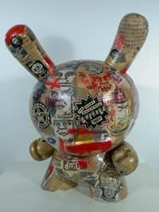
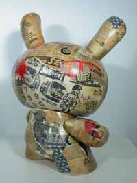

Kid Robot
From The Giant: The Definitive Obey Giant Site
Taken From WikiPedia
Kid Robot is a Urban Designer Toy retailer with locations in New York and California. They specialize in artist created toys and imports from Japan, Hong Kong, and parts of Europe. Most items are limited in production and become collectors items. Besides selling toys, Kid Robot also creates their own signature brands, such as Munny and Dunny: soft vinyl figurines that owners can draw and paint on. Some artists are commisioned to create custom Dunny's that Kid Robot then reproduces for limited series runs. These include customs by such notables as Ed Templeton (Toy Machine), Mike Shinoda (Linkin Park/Fort Minor), Shepard Fairey (Obey Giant), and Mark Hoppus (Blink 182/Atticus).
Kid Robot has used this figure in the past as a canvas for artists. The following pieces were on exhibit: May 17 through July 17 2004
at the:
Visionaire Gallery
11 Mercer Street (between Grand & Canal), SoHo, NYC:


{kind=link}
{kind=link}
[edit] The Dunny
The following image is an example of a Kid Robot toy designed by Shepard Fairey: